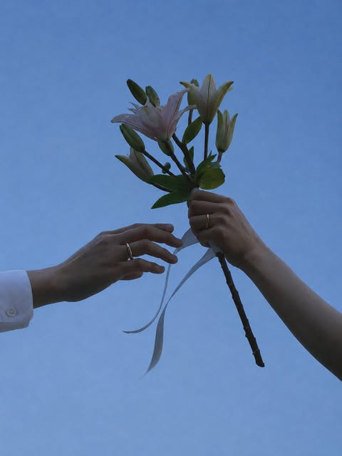
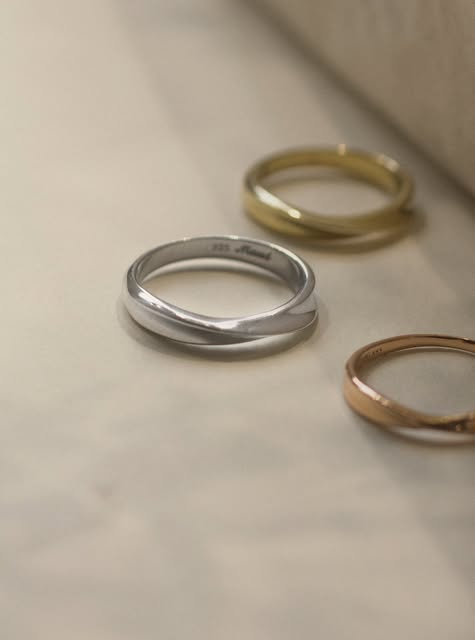
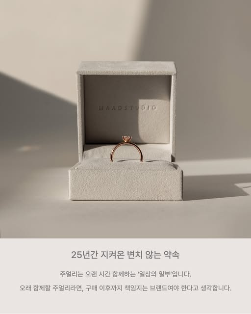
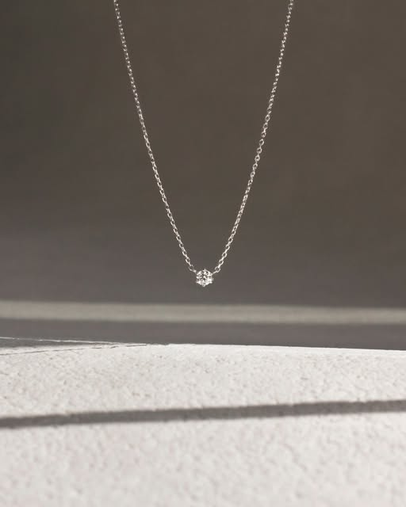
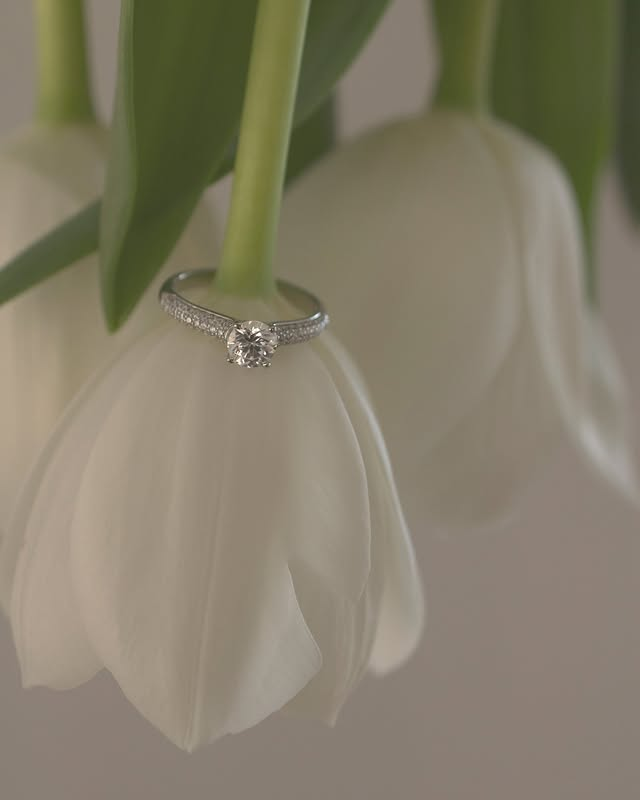
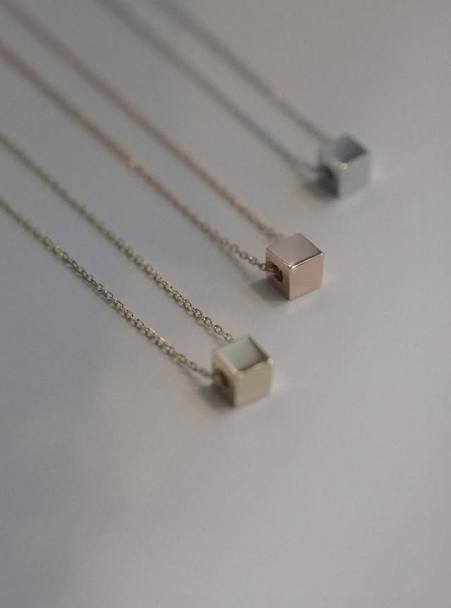
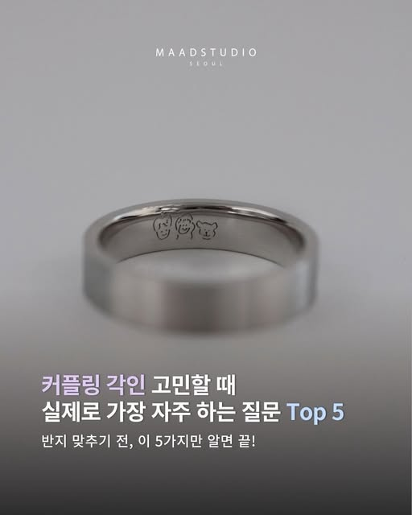
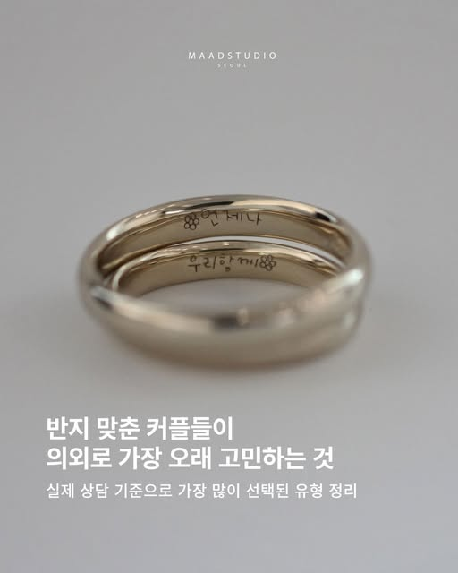

First Celebration
처음 맞이하는
축복을 위한 작은 빛
백일, 돌, 탄생의 순간을 따뜻하고 정갈하게 기념하는 베이비 주얼리입니다.
Baby
베이비 컬렉션
Brand Story
아이가 자라는 시간
변치 않을 가치
처음으로 반지를 낀 아이의 작은 손을 기억합니다. 수베니아가 제안하는 돌반지는 단순한 선물을 넘어, 그날의 벅찬 감정을 오래도록 간직할 수 있는 타임캡슐입니다.
훗날 아이가 자라 이 반지를 다시 열어보았을 때도 여전히 세련된 아름다움을 유지할 수 있도록, 가장 클래식하고 우아한 디테일로 완성했습니다.
Moments with Souvenir
GRAB







